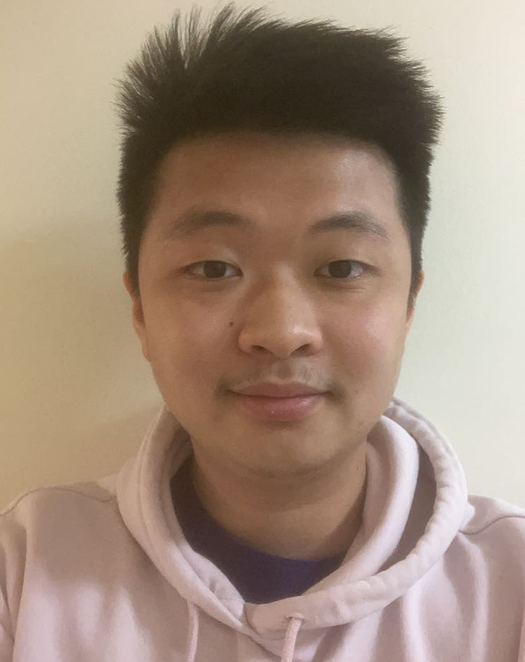

Marc Jiang
About Me

My name is Marc Jiang, and I am a junior at Northwestern University
studying Computer Science in the BS/MS program. I currently work at the
TIILT Lab at Northwestern University. My goal is to improve
the daily lives of people using computer science. I am interested in doing so through the psychological,
educational, and/or medical field. I am also interested in doing so by contributing on products that
people commonly use. For example, I will be interning at Facebook this summer and hopefully will be
working on their application. As of now, my goal is to learn and gain as much skill and work experience
as possible so that in the future, I can contribute to projects I deeply care about at my fullest capacity.
My hobbies are running, basketball, and watching movies. I am currently trying to
teach myself guitar and cooking. I like spending time with others and getting to know them better. My favorite
food, candy, and snack is instant noodles, sour patches, and hot cheetoes. My favorite restuarant is Chipotle
(I used to work there!), and my go to order is the chicken bowl. Some of my favorite artists are Lauv, LANY,
Ed Sheeran, Chance the Rapper, and Quinn XCII. I am always looking for song suggestions.
Love your neighbor as yourself.
Love your neighbor as yourself.
Education
Back to Top Northwestern University (Evanston, IL.)
BS/MS in Computer Science
Expected Graduation: June 2022
GPA: 3.96/4.00
Whitney Young (Chicago, IL.)
High School Dipolma
June 2018
GPA: 5.16/6.00
Skills
Back to Top Full
- Python (Pandas, Numpy, Scipy)
- Java
- Scheme (DrRacket)
Working
- C++
- C# (Unity)
- Linux (RHEL, Antergos)
- Unix
- Assembly
- OpenCV
- JavaScript (D3)
- HTML/CSS
Beginner
- PyTorch
- PDDL
- MATLAB
- Haskell
- C
- Rust
- SQL
- Arduino
- Amazon Echo
- AWS Lambda
- Swift